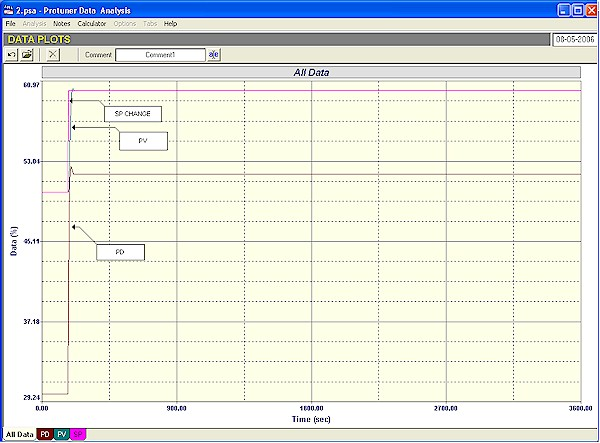
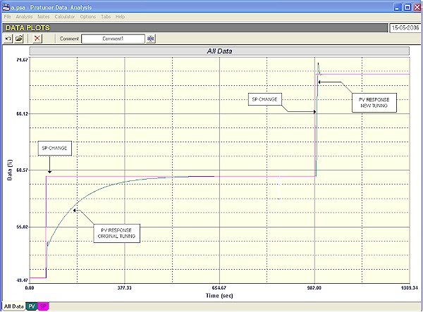
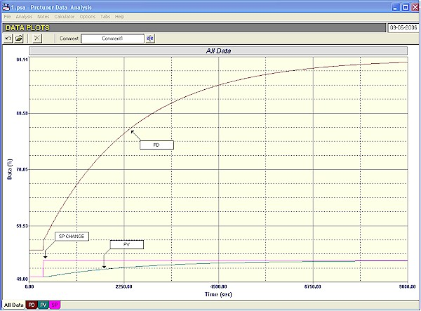
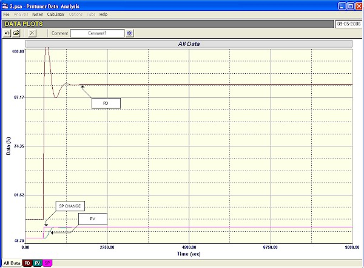

|
| [Home] [About us] [Contact us] [Training] [Optimisation services] [Protuner] |
| [Loop signatures] [Case histories] [Continuous loop performance monitoring] |
|
Control Loop Case History 90 TUNING IS ALSO IMPORTANT I have very often pointed out in past articles that when optimising control loops, the last step to be performed is the tuning. I also mentioned that there is a strong perception amongst many, if not most, plant personnel that any problem can be sorted out by tuning the controller. It is absolutely vital to go through many other steps to thoroughly analyse the loop before the tuning can be carried out confidently. It is essential to gain at least a basic understanding of the actual process, and also a really thorough understanding of the control requirements of the process including process dynamics, type of control needed, etc. As mentioned many times before, and particularly in my Loop Signature series of articles, each loop needs its own "optimum" tune to satisfy the unique control requirements of that particular process. The highly theoretical concept taught at nearly all control schools that quarter wave, or quarter damped response is the optimum tune that should always be used, is not practical for a variety of very good reasons which are detailed in Loop Signature P1-24 in my CD, "Basic Troubleshooting and Loop Tuning". Possibly I have mistakenly given the impression that tuning is not all that important. If so, I apologise. It is certainly also of vital importance. However it can generally only work well if one has gone through all the previous steps of the analysis, to ensure that the most appropriate tuning is used. Another point I often make which is often derided by many people, is that in general in virtually every single one of the many hundreds of process plants wherein my colleagues and I have performed optimisation, we have found that at least 85% of the loops are operating completely inefficiently in automatic. Normally as far as tuning is concerned, most are completely detuned (i.e. tuned far too slowly) to be effective. People often take me to task on this and say that it would be impossible for plants to operate like this. To site a recent example of this, I met another consulting control engineer at a dinner. This gentleman has had many years of experience in teaching, loop tuning, and advanced control. He took me to task, and said that he has had as much experience as I have, and basically that I was talking nonsense. I then offered him a free place on one of my courses, so he could understand why I say what I do. This he declined. I then offered to spend a day free of charge (except for expenses at cost), at any plant of his choosing, where he could arrange for us to do a free audit of some of their loops, so we could see at the end of the day how many were operating effectively. He has not taken me up on this challenge either. Anyway in this article I would like to illustrate a few cases in point where tuning is vital. These were in a world class South African chemical plant that has been running for a long time, and is supposed to be well optimised. Certainly the leading technician who arranged the consultation has had many years of experience, is a very intelligent person, and did say that he thought he knew quite a bit about tuning. The first example was the control of the feed gas to a reactor. They were having a lot of problems with the reactor performance, one of which was that the feed-flow was jumping around too much. The process supervisor working with us on the optimisation said that things would be a lot better if the control of this flow could be improved made really fast. Initial inspection of the loop showed the tuning parameters were way too slow. A closed loop test is shown in Figure 1. It can be seen that on a 10% SP (set-point) change it took over an hour for the PV (process variable) to reach the new setpoint! This is what I sometimes refer to as tuning being "close to manual".
Figure 1 Figure 2 with the same time scale shows the same test with what I consider relatively slow and stable new tuning. The flow now follows the 10% SP change within about 20 seconds.  Figure 2 The new tuning worked extremely well. There were a lot of load changes going on in and after the reactor, and the control was now excellent for the reactor. However the next morning there were big complaints from the supervisor of the plant upstream which supplied the feed gas. Our flow control was working so well that the pressure changes caused backwards upstream by the flow control valve operating nice and quickly to keep the flow constant, was upsetting their plant. (This was probably due to poor control performance in the upstream plant). It was therefore important to try and find a compromise, whereby the control was slow enough to prevent upsetting the upstream plant, but remaining fast enough to allow good control on the reactor. This was achieved by reducing the speed of the control by about 50%. I also recommended that the upstream plant should also be optimised. This is a very good example which illustrates various things. Tuning is of course very important. However there is no such thing as one "optimum tune" like the classical quarter wave damping. You need to understand what the control is there for, what can cause upsets etc., and then determine the best tune to meet the conditions as well as possible. This means that people have to really have a good understanding of the process, and to understand exactly what they are trying to achieve. Then again, tuning one loop without taking other related processes and control loops into account is not a good idea. You need to look holistically at the whole system. It is also a good idea in general to start optimisation upstream, and work downstream from there. The second example is of a top temperature control in a distillation column. The temperature is controlled by varying the reflux flow back into the column, via a cascade slave flow controller. The column was in a different plant on the site. I was called in by the process manager on that particular plant who heard that I was on site, and wanted me to look at some of the controls in his plant as he thought they could be improved. His plant performance was in general pretty dismal, and he felt that much of this might have been due to poor control, so he chose this temperature control with which the operators were having a lot of problems, to test his theory. The slave flow loop was tested first. It was found that the valve was very good, but the tuning was extremely slow. This is very bad for a cascade secondary control. It was shown in the first loop signature series on the above referenced CD, that the slave loop needs to be at least 10 times faster than the master loop to prevent interaction between the two controls. Therefore reasonably fast tuning is a perquisite on such a loop. Figure 3 is quite interesting. It shows the response of the flow loop with the original tuning and with the new tuning on the same graph, so the tunings can be easily compared. As will be seen, the difference is quite dramatic.  Figure 3 The tuning of the temperature loop proved equally dramatic. Figure 4 shows the response to a small 3% set-point change. It has not reached the new set-point after 2.5 hours.  Figure 4 In Figure 5, with the new tuning, one sees the loop responding to the same size of set-point change in only 5 minutes!  Figure 5 If we assume that similar tuning probably exists on most of the other loops in the same plant, one can see why the process manager was not happy. I feel that things like this just "boggle the mind". The plant belongs to a leading company. It has been operating for years, and obviously makes good profits. There is no shortage of skilled process and control personnel. So how is it possible that it has been operating with controls in such a terrible state for all those years, and that no-one was aware of the problems? In spite of things like this which I see every day, people still say I am talking nonsense and that it is impossible for plants to be operating with controls in such a bad state. Michael
Brown is a specialist in control loop optimisation, with many years of
experience in process control instrumentation. His main activities are
consulting, and teaching practical control loop analysis and
optimisation. He gives training courses which can be held in clients'
plants, where students can have the added benefit of practising on live
loops. His work takes him to plants all over South Africa, and also to
other countries. He can be contacted at:
|